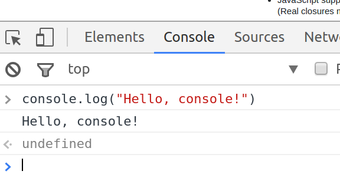

C# vs JavaScript
"Who… run… Bartertown?"
© We Can Code IT, LLC
Java vs JavaScript

Java is to Javascript as ham is to hamster.
―Jeremy Keith
C# is to Javascript as ham is to hamster.
―Kyle McKee
Differences
| C# | vs | JavaScript |
|---|---|---|
| compiled | interpreted (usually) | |
| write once, run (almost) anywhere | subject to differences in execution environments | |
| statically typed | dynamically typed | |
| classical inheritance - a class inherits from another class | prototypal (or prototypical) inheritance - an object delegates to another object (its prototype) |
Welcome to the console
- Chrome Developer tools, ways to get there:
- Tools Menu->Developer tools
- Shift+Ctrl+I
- Right click an element and select Inspect
-
Click the Console tab

<- undefinedindicates the return value- implements what is known as a Read Evaluate Print Loop (REPL)
Writing to the console
C
Console.WriteLine("my message");
JavaScript
console.log("my message");
Dynamic languages
- no type-checking or compilation: ‘bad’ code is executed
- variables have no type
C# (statically typed)
string number = "42";
number = 42; // Error!
JavaScript (dynamic)
var number = "42";
number = 42;
number = 42.0;
number = new Date(); // ? ¯\_(ツ)_/¯
Names are more important than ever in a dynamic language.
Be Careful! If you do not use var to declare a JavaScript variable, it will be created automagically in the global scope. This can cause you pain.
Arrays
C
string[] menuItems = { "steak", "escargot", "tacos de pescado" };
JavaScript
var menuItems = [ "steak", "escargot", "tacos de pescado" ];
Square brackets, not curly brackets.
Iterating by index
C
string[] menuItems = { "steak", "escargot", "tacos de pescado" };
for (int i = 0; i < menuItems.Length; i++)
{
Console.WriteLine(menuItems[i]);
}
JavaScript
var menuItems = [ "steak", "escargot", "tacos de pescado" ];
for (var i = 0; i < menuItems.length; i++) {
console.log(menuItems[i]);
}
Iterating with forEach
C
string[] menuItems = { "steak", "escargot", "tacos de pescado" };
foreach (string item in menuItems)
{
Console.WriteLine(item);
}
JavaScript
var menuItems = [ "steak", "escargot", "tacos de pescado" ];
menuItems.forEach(function(element) {
console.log(element)
});
The function argument to forEach above is known as a callback function. JavaScript has a heavy focus on functional programming.
C#’s List class has a similar ForEach method that allows for a more functional style than the foreach keyword.
Functional Programming
C# includes some functional programming features that you may have seen here and there.
List<string> menuItems
= new List<string>() { "steak", "escargot", "tacos de pescado" };
menuItems.ForEach(Console.WriteLine);
// or…
menuItems.ForEach(item => Console.WriteLine(item));
This is equivalent to the JavaScript from the previous slide:
var menuItems = [ "steak", "escargot", "tacos de pescado" ];
menuItems.forEach(function(element) {
console.log(element)
});
Which could, similarly, be shortened to:
var menuItems = [ "steak", "escargot", "tacos de pescado" ];
menuItems.forEach(console.log);
Functions are first-class citizens
Storing a function in a variable:
> var sayHello = function(arg) {
console.log("Hello, I'm a function");
}
<- undefined
Getting its value:
> sayHello // value of sayHello
<- function (arg) {
console.log("Hello, I'm a function");
}
Executing the function:
> sayHello() // calling sayHello
Hello, I'm a function
JavaScript Object Notation (JSON)
function VirtualPet() {}; // constructor
VirtualPet.prototype = {
hunger: 20,
feed: function() {
this.hunger = this.hunger - 5;
},
isHungry: function() {
return this.hunger >= 30;
}
};
var fido = new VirtualPet();
JavaScript inheritance is prototypal, which means that objects delegate to a prototype associated with the function that created them.
Demo: Fido is always hungry, Bobo is never hungry.
Encapsulation in JavaScript is more difficult.
Also JSON - instead of Maps
C
Dictionary<string, string> prices = new Dictionary<string, string>();
prices.Add("steak", "34.95");
prices.Add("tacos de pescado", "19.95");
foreach (var kvp in prices)
{
Console.WriteLine(kvp.Key + ": " + kvp.Value);
}
JavaScript
var prices = {
"steak": "34.95",
"tacos de pescadot": "19.95"
};
for (var item in prices) {
console.log(item + ": " + prices[item]);
}
Also Also JSON
JavaScript objects are a lot like Dictionarys. In our previous example, we were really iterating over the properties of a JavaScript object. Try this:
function VirtualPet() {}; // constructor
VirtualPet.prototype = {
hunger: 20,
feed: function() {
this.hunger = this.hunger - 5;
}
};
var fido = new VirtualPet();
console.log("Fido's hunger before feeding is " + fido.hunger);
fido.feed();
console.log("After feeding:");
for (var attr in fido) {
console.log(attr + ": " + fido[attr]);
}
Arrays are Maps?
> var myArray = [ "fee", "fie", "foe" ]
<- undefined
> myArray
▼ (3) ["fee", "fie", "foe"]
0: "fee"
1: "fie"
2: "foe"
length: 3
▶ __proto__: Array(0)
<- undefined
So far, so good…
> myArray[3] = "fum"
<- "fum"
> myArray
▶ (4) ["fee", "fie", "foe", "fum"]
Ok, that makes sense. Let’s try:
> myArray[42] = "fourty-two"
<- "fourty-two"
> myArray
▼ (43) ["fee", "fie", "foe", undefined x 38, "fourty-two"]
0: "fee"
1: "fie"
2: "foe"
42: "fourty-two"
length: 43
▶ __proto__: Array(0)
<- undefined
> myArray[23]
undefined
<- undefined
How about…
> myArray["wat"] = "Welcome to JavaScript!"
<- "Welcome to JavaScript!"
> myArray
▼ (43) ["fee", "fie", "foe", undefined x 38, "fourty-two"]
0: "fee"
1: "fie"
2: "foe"
42: "fourty-two"
wat: "Welcome to JavaScript!"
length: 43
▶ __proto__: Array(0)
Notice that the length of the array is still 43. Now try:
> myArray.wat
Welcome to JavaScript!
Wat?
Duck Typing
Common to dynamic languages.
If it looks like a duck, swims like a duck, and quacks like a duck, then it probably is a duck. Quack!
Recommended Reading
If you’d like to get deeper into JavaScript than we will be, this is a great place to start.